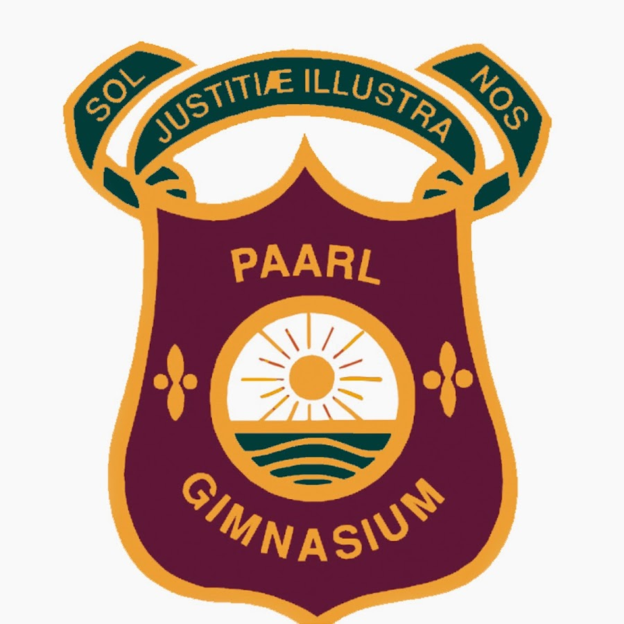

Herman Minnaar
Summary
Analytical and results-driven aspiring Data Scientist with a solid foundation in statistics, machine learning, and data visualization.
Proficient in Python, R, SQL, and tools like Pandas, NumPy, scikit-learn, and Matplotlib.
Experienced in cleaning, analyzing, and modeling real-world datasets to extract actionable insights.
Strong communicator with a passion for solving complex problems and translating data into strategic decisions.
Eager to apply skills in a collaborative, data-driven environment.
Education
Hoërskool Paarl Gimnasium : National Senior Certificate
2019 – 2023
Completed high school with a strong academic record and foundational skills in mathematics and science.

University of Stellenbosch : Bcom in Data Science
2024 – Present
Currently pursuing a Bachelor's degree in Data Science, with coursework focusing on statistics, machine learning, programming, and data analysis.

Work experience
Venue Assistant – SA20 Tournament
Boland Park, Paarl | Jan 2024 – Present
- Assisted in the coordination and management of match-day operations during the SA20 cricket tournament.
- Collaborated with venue staff to ensure smooth execution of events and a positive experience for attendees.
- Gained valuable experience in time management, teamwork, and working in high-pressure environments.
Skills
Technical Skills
- Programming: Python, Java
- Data Analysis: Pandas, NumPy
- Data Visualization: Matplotlib, Seaborn
- Version Control: Git & GitHub
- Microsoft Excel & Google Sheets
- Basic SQL knowledge
Soft Skills
- Strong analytical and problem-solving abilities
- Effective communication
- Teamwork and collaboration
- Time management
- Adaptability
- Attention to detail
Other Skills
- Event coordination and logistics
- Customer service and public interaction
- Languages: Fluent in Afrikaans and English
Awards and Achievements
- Dux Learner, Hoërskool Paarl Gimnasium (2023)
Awarded to the top academic performer in the matric year.
- Student Leadership Roles,
University of Stellenbosch Residence
Served in multiple leadership positions,
contributing to community development and student support within
the residence.
Other